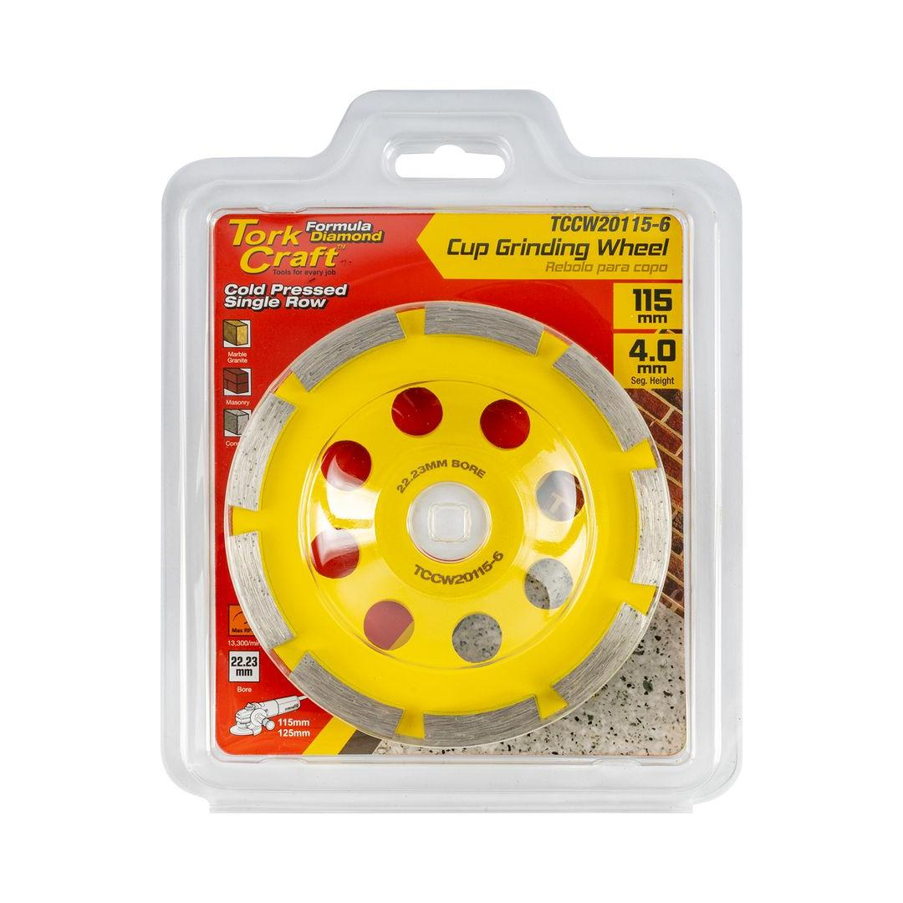
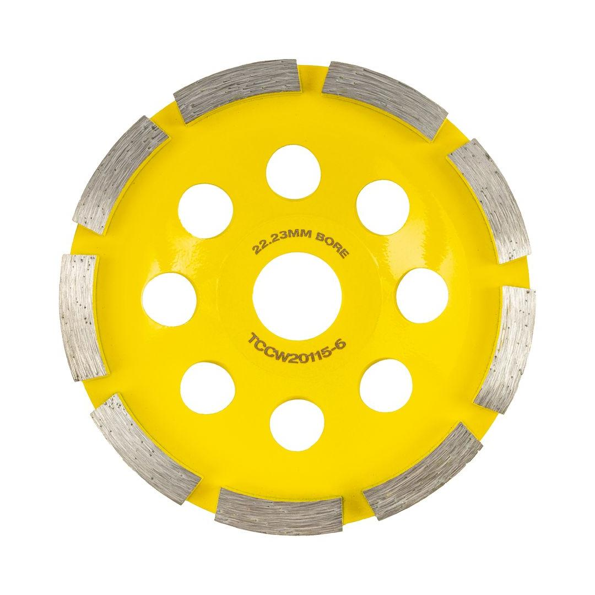

TCCW20115-6


Cup Diameter: 115mm
Arbor: 22.23mm
Max RPM: 13 300
Segment Configuration: Single Row
Classification: Yellow (Standard)
This 115mm single-row diamond cup wheel, with a 22.23mm bore, is a cost-effective and efficient tool for a range of grinding applications. Its cold-pressed manufacturing process ensures durability, while the single-row diamond segments provide a fast and aggressive grinding action. This design is particularly effective for heavy stock removal on concrete, masonry, and other similar materials, making it ideal for tasks like leveling uneven surfaces, smoothing out bumps, and removing old coatings. It&s a great choice for professionals and DIY users looking for an affordable yet high-performing grinding wheel for preparing surfaces and tackling demanding jobs with a standard angle grinder.
Application: